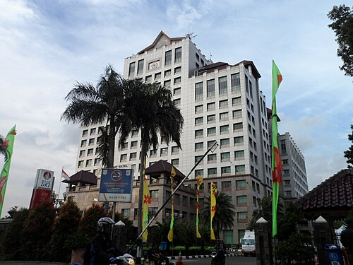

Kota Jakarta Selatan
DKI Jakarta
Kota Administrasi Jakarta Selatan adalah nama sebuah kota administrasi di bagian selatan Daerah Khusus Ibukota Jakarta. Pusat pemerintahannya berada di Kecamatan Kebayoran Baru. Jakarta Selatan adalah salah satu dari lima kota administrasi di DKI Jakarta. Di sebelah utara, Jakarta Selatan berbatasan dengan Jakarta Barat dan Jakarta Pusat. Di sebelah timur berbatasan dengan Jakarta Timur. Di sebelah selatan berbatasan dengan Kota Depok, Jawa Barat, serta sebelah barat dengan Kota Tangerang dan Kota Tangerang Selatan, Banten.
Jakarta Selatan adalah kota administrasi dengan jumlah penduduk pada tahun 2018 sebanyak 2.296.977 jiwa, termasuk diantaranya 2.198 jiwa merupakan warga negara asing (WNA). Sementara pada semester 2 tahun 2024, penduduk Jakarta Selatan berjumah 2.331.411 jiwa. Wilayah yang terluas di Kota Administrasi Jakarta Selatan adalah Kecamatan Jagakarsa yang memiliki wilayah seluas 24,87 km2.
Jumlah Penduduk
| No | Jenis kelamin | Jumlah |
|---|---|---|
| 1 | Laki-laki | 1.122.780 jiwa |
| 2 | Perempuan | 1.112.826 jiwa |
| 3 | Total | 2.230.653 jiwa |
Kecamatan
- Cilandak
- Jagakarsa
- Kebayoran Baru
- Kebayoran Lama
- Mampang Prapatan
- Pancoran
- Pasar Minggu
- Pesanggrahan
- Setiabudi
- Tebet
Website Pemkot Jakarta

" frameborder="0">